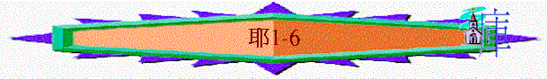
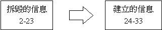
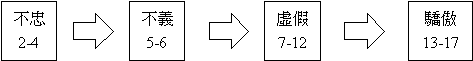

|
拆
毀
與
建
立 |
||||
|
引
言 |
拆毀聖城的信息 |
印証敗壞的歷史 |
打碎列邦的預言 |
總結 |
|
１ |
２－３３ |
３４－４４ |
４５－５１ |
５２ |
引言（１）
〜交待全書內容與耶利米事奉的重點
1.
事奉的根基
a.神的揀選
「我未將你造在腹中，我已曉得你；你未出母胎，我已分別你
為聖；我已派你作列國的先知。」v.５
〜不在乎你的出生，你的行為，你的性格，在未懷胎神已揀選
b.神的旨意
〜神在先知未出生之先，已定下旨意，要他作列國的先知，祂的旨意沒有人可以攔阻
c.神的吩咐
「耶和華對我說：你不要說我是年幼的，因為我差遣你到誰那裡去，你都要去；我吩咐你說什麼話，你都要說。」v.７
〜神要人去那�堙A人不可推卻說年輕，因是神的吩咐
d.神的同在
「你不要懼怕他們，因為我與你同在，要拯救你。這是耶和華說的。」v.８
〜神同在就是事奉者安心的最大保證
2.傳講的信息
a.從神而來
「於是耶和華伸手按我的口，對我說：我已將當說的話傳給你。」v.９
b.對列邦說
「看哪，我今日立你在列邦列國之上，為要施行拔出、拆毀、毀壞、傾覆，又要建立、栽植。」v.１０
c.帶有能力
〜可以有拔出、拆毀、建立之能
d.必會成就
「耶和華的話又臨到我說：「耶利米，你看見什麼？」我說：「我看見一根杏樹枝。」耶和華對我說：「你看得不錯；因為我留意保守我的話，使得成就。」」v.１１－１２
〜杏樹是春天最早發芽之植物，人見到杏樹發芽，必知到春天已實在臨到
〜杏樹枝同「保守」字根相同，意味神保守祂的話必成就
e.帶出判言
「耶和華的話第二次臨到我說：「你看見什麼？」我說：「我看見一個燒開的鍋，從北而傾。」
耶和華對我說：「必有災禍從北方發出，臨到這地的一切居民。」」v.１３－１４
「至於這民的一切惡，就是離棄我、向別神燒香、跪拜自己手所造的，我要發出我的判語，攻擊他們。」v.１６
〜用燒開的鍋從北而傾，比喻必有災禍從北而來，如燒開的鍋的猛烈，聖城必被攻擊
〜攻擊的原因是他們離棄神
3.事奉必有的心態
〜你若是耶利米，作列幫先知，講審判的話，你的心情如何？
a勇敢的必要
「所以你當束腰，起來將我所吩咐你的一切話告訴他們；不要因他們驚惶，免得我使你在他們面前驚惶。」v.１７
〜必要的程度是事奉者若沒有，神會管教的！
b.勇敢的動力
i.
神的命令
ii.
神的建立
iii.神的應許
「看哪，我今日使你成為堅城、鐵柱、銅牆，與全地和猶大的君王、首領、祭司，並地上的眾民反對。他們要攻擊你，卻不能勝你；因為我與你同在，要拯救你。這是耶和華說的。」v.１８－１９
〜看耶利米書時，可以留意先知被人攻擊的經過，神如何建立他，使他成為聖城，鐵柱，而在危難中，神的應許，拯救如何應驗
一
拆毀聖城的信息（２－３３）宣講性
〜很多「耶和華的話臨到我說」類似眼
〜宣講信息的時間神有時非接歷史先後次序而敘述
〜主要目的是透過信息拆毀選民的自義，顯出他們的罪惡宣講神的傾覆審判，最後也提供建立之路與選民
〜從經文中，也看到先知的感受、掙扎及神的建立與他的成長
〜主要結構

1. 拆毀的信息(2-23)
∼先指斥整體百姓的罪惡，後宣對個別領袖的不是，神的審判
a.
指斥整體百姓的惡行(2-19)
∼結構

i. 不忠(2-4)
∼用很多女性（處女、新婦、妓女、婦女、妹妹）的字眼
∼用婚姻、戀愛、淫亂來指出選民離棄神，行淫亂（拜偶像、投靠外邦）
(1)他們的不忠
(a)從真神本身而看-->神曾施恩
人都忘記神(不合情)
「你去向耶路撒冷人的耳中喊叫說，耶和華如此說：你幼年的恩愛，婚姻的愛情，你怎樣在曠野，在未曾耕種之地跟隨我，我都記得。」耶
2:2
「我領你們進入肥美之地，使你們得吃其中的果子和美物；但你們進入的時候就玷污我的地，使我的產業成為可憎的。」耶
2:7
(b)從其它邦國而看-->神沒不好
人卻離棄神(不合理)
「你們且過到基提海島去察看，打發人往基達去留心查考，看曾有這樣的事沒有。豈有一國換了他的神嗎？其實這不是神！但我的百姓將他們的榮耀換了那無益的神。」耶
2:10-2:11
「因為我的百姓做了兩件惡事，就是離棄我這活水的泉源，為自己鑿出池子，是破裂不能存水的池子。」耶
2:13
∼很少國家會換了自己的神，但以色列人卻會！
∼神才是活水的泉源，對人有益，但人卻離棄神，找了不能存水於己無益的偶像/
外邦為依靠
(c)從過往歷史而看-->神已管教
人卻任意行(不受教)
「挪弗人和答比匿人也打破你的頭頂。這事臨到你身上，不是你自招的嗎？不是因耶和華你神引你行路的時候，你離棄他嗎？現今你為何在埃及路上要喝西曷的水呢？你為何在亞述路上要喝大河的水呢？」耶
2:16-2:18
∼「挪弗」和「答比匿」是埃及城市
∼在歷史�堙A以色列人曾想投靠埃及對抗外邦攻擊，但反過來卻受埃及攻擊！
(d)從現在情況而看-->神已鑑察
人卻不認錯(不知錯)
「你怎能說：我沒有玷污、沒有隨從眾巴力？你看你谷中的路，就知道你所行的如何。你是快行的獨峰駝，狂奔亂走。你是野驢，慣在曠野，慾心發動就吸風；起性的時候誰能使他轉去呢？凡尋找他的必不至疲乏；在他的月分必能尋見。我說：你不要使腳上無鞋，喉嚨乾渴。你倒說：這是枉然。我喜愛別神，我必隨從他們。」耶
2:23-2:25
∼他們不單覺自己沒沾污，仍任意而行，如慾心發動的野驢在交配追尋雄性的樣式
∼「獨駝」，牠們易受驚擾，行動變幻莫測
(2)真神的挽回
(a)用人世間的角度
∼非人間的挽回
「有話說：人若休妻，妻離他而去，作了別人的妻，前夫豈能再收回他來？若收回他來，那地豈不是大大玷污了嗎？但你和許多親愛的行邪淫，還可以歸向我。這是耶和華說的。」耶
3:1
(b)用以色列的角度
∼北方以色列雖敗亡，但若回轉，南方亦可跟隨
(i)人若回轉神的怒氣可轉消
「你去向北方宣告說：耶和華說：背道的以色列啊，回來吧！我必不怒目看你們；因為我是慈愛的，我必不永遠存怒。這是耶和華說的。」耶
3:12
(ii)人若回來神的恩典必臨到
「耶和華說：背道的兒女啊，回來吧！因為我作你們的丈夫，並且我必將你們從一城取一人，從一族取兩人，帶到錫安。」耶
3:14
「那時，人必稱耶路撒冷為耶和華的寶座；萬國必到耶路撒冷，在耶和華立名的地方聚集。他們必不再隨從自己頑梗的惡心行事。」耶
3:17
「我說：我怎樣將你安置在兒女之中，賜給你美地，就是萬國中肥美的產業。我又說：你們必稱我為父，也不再轉去不跟從我。」耶
3:19
(c)用過往歷史教訓的角度
「仰望從小山或從大山的喧嚷中得幫助，真是枉然的。以色列得救，誠然在乎耶和華我們的神。從我們幼年以來，那可恥的偶像將我們列祖所勞碌得來的羊群、牛群，和他們的兒女都吞吃了。」耶
3:23-24
(d)用可行途徑的角度
「耶和華說：以色列啊，你若回來歸向我，若從我眼前除掉你可憎的偶像，你就不被遷移。」耶
4:1
「猶大人和耶路撒冷的居民哪，你們當自行割禮，歸耶和華，將心裡的污穢除掉；恐怕我的忿怒因你們的惡行發作，如火著起，甚至無人能以熄滅！」耶
4:4
∼除掉�堨~污穢
∼決心歸向真神
(3)至終的傾覆
∼但可惜猶大國至終卻不回轉，神的管教將臨到
(a)受羞辱
「賊被捉拿，怎樣羞愧，以色列家和他們的君王、首領、祭司、先知也都照樣羞愧。」耶
2:26
「你為何東跑西奔要更換你的路呢？你必因埃及蒙羞，像從前因亞述蒙羞一樣。你也必兩手抱頭從埃及出來；因為耶和華已經棄絕你所倚靠的，你必不因他們得順利。」耶
2:36-37
(b)受痛苦
「應當向錫安豎立大旗。要逃避，不要遲延，因我必使災禍與大毀滅從北方來到。」耶
4:6
「你的行動，你的作為，招惹這事；這是你罪惡的結果，實在是苦，是害及你心了！」耶
4:18
「我聽見有聲音，彷彿婦人產難的聲音，好像生頭胎疼痛的聲音，是錫安女子（就是指民的意思）的聲音；他喘著氣、挓挲手，說：我有禍了！在殺人的跟前，我的心發昏了。」耶
4:31
∼他們將受北方攻擊，所受的痛苦如難產的婦人
(4)先知的掙扎
(a)內心的痛苦
「我的肺腑啊，我的肺腑啊，我心疼痛！我心在我裡面煩躁不安。我不能靜默不言，因為我已經聽見角聲和
打仗的喊聲。」耶
4:19
(b)神話的安慰
「耶和華如此說：全地必然荒涼，我卻不毀滅淨盡。」4:27
ii.不義(5-6)
∼比之前幾章，更詳細交待他們在生活行為上對神，對人的不義
(1)全城的不義
「你們當在耶路撒冷的街上跑來跑去，在寬闊處尋找，看看有一人行公義求誠實沒有？若有，我就赦免這城。其中的人雖然指著永生的耶和華起誓，所起的誓實在是假的。」耶
5:1-2
「我要去見尊大的人，對他們說話，因為他們曉得耶和華的作為和他們神的法則。哪知，這些人齊心將軛折斷，掙開繩索。」耶
5:5
「國中有可驚駭、可憎惡的事：」耶
5:30
「因為萬軍之耶和華如此說：你們要砍伐樹木，築壘攻打耶路撒冷。這就是那該罰的城，其中盡是欺壓。」耶
6:6
「因為他們從最小的到至大的都一味地貪婪，從先知到祭司都行事虛謊。」耶
6:13
∼無論是尊貴的人、領袖、平民、大的、小的，全城都充滿不義！
∼竟找不到一個行公義之人！
(2)仔細的敗壞
(a)離棄神
「我怎能赦免你呢？你的兒女離棄我，又指著那不是神的起誓。我使他們飽足，他們就行姦淫，成群地聚集在娼妓家裡。」耶
5:7
(b) 不怕神
「愚昧無知的百姓啊，你們有眼不看，有耳不聽，現在當聽這話。耶和華說：你們怎麼不懼怕我呢？我以永遠的定例，用沙為海的界限，水不得越過。因此，你們在我面前還不戰兢嗎？波浪雖然翻騰，卻不能逾越；雖然匉訇，卻不能過去。」耶
5:21-22
「心內也不說：我們應當敬畏耶和華我們的神；他按時賜雨，就是秋雨春雨，又為我們定收割的節令，永存不廢。」耶
5:24
(c)不公義
「他們肥胖光潤，作惡過甚，不為人伸冤！就是不為孤兒伸冤，不使他亨通，也不為窮人辨屈。」耶
5:28
(d) 愛謊言
「國中有可驚駭、可憎惡的事：就是先知說假預言，祭司藉他們把持權柄；我的百姓也喜愛這些事，到了結局你們怎樣行呢？」
耶 5:30-31
(e)盡欺壓
「因為萬軍之耶和華如此說：你們要砍伐樹木，築壘攻打耶路撒冷。這就是那該罰的城，其中盡是欺壓。井怎樣湧出水來，這城也照樣湧出惡來；在其間常聽見有強暴毀滅的事，病患損傷也常在我面前。」耶
6:6-7
(f)滿貪婪
「因為他們從最小的到至大的都一味地貪婪，從先知到祭司都行事虛謊。」耶
6:13
(3)真神的傾覆
(a)神燒滅他們
「所以耶和華萬軍之神如此說：因為百姓說這話，我必使我的話在你口中為火，使他們為柴；這火便將他們燒滅。」耶
5:14
「耶和華如此說：看哪，有一種民從北方而來，並有一大國被激動，從地極來到。」耶
6:22
「我民（原文作民女）哪，應當腰束麻布，滾在灰中。你要悲傷，如喪獨生子痛痛哭號，因為滅命的要忽然臨到我們。」耶
6:26
(b)神離棄他們
「人必稱他們為被棄的銀渣，因為耶和華已經棄掉他們。」耶
6:30
(4)先知的掙扎
(a)難忍的忿怒
「因此我被耶和華的忿怒充滿，難以含忍。我要傾在街中的孩童和聚會的少年人身上，連夫帶妻，並年老的與日子滿足的都必被擒拿。」耶
6:11
∼先知雖見到神的審判感哀痛，但看見百姓的不義，心也難忍正義的忿怒
(b)真神的建立
「我使你在我民中為高臺（或作：試驗人的），為保障，使你知道試驗他們的行動。他們都是極悖逆的，往來讒謗人。他們是銅是鐵，都行壞事。風箱吹火，鉛被燒毀；他們煉而又煉，終是徒然；因為惡劣的還未除掉。」耶
6:27-29